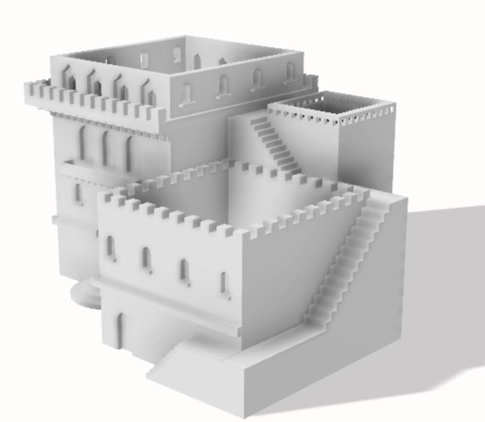

Phone
+1 857 209 6440
Email
rebei@mit.edu
3D Printing and Scanning
Succulent Holder and 3D Printed Jewlery

Design Process
Summary
I wanted to create and print something on the 3D printer that could not be made subtractively, so only a 3D printer could make it. 3D printing or additive manufacturing is a process of making three dimensional solid objects from a digital file. The creation of a 3D printed object is achieved using additive processes. In an additive process an object is created by laying down successive layers of material until the object is created. Each of these layers can be seen as a thinly sliced horizontal cross-section of the eventual object.
What I Used
- Fusion 360
- uPrint 3D Printer
- 3D Wox Sindoh
3D printing is the opposite of subtractive manufacturing which is cutting out / hollowing out a piece of metal or plastic with for instance a milling machine. 3D printing enables you to produce complex shapes using less material than traditional manufacturing methods. For this assignment, I wanted to try 3D printing jewlry. However, because that can technically by made subtractivly, I also made a succulent holder with hollow stairs that could not be made subtractlivley.
Designing the Prints in Fusion 360
Succulent HolderDesigning this succulent holder took over 10 hours, because I had to pay a lot of attention to detail from the over hangs of the ledges to the tiny staircase that revolves around the castle. I also havn't used Fusion in a very long time so I had to relearn the software while making this structure.
Rendered Views
Jewelry Designs and Jewelry Holder
I also modeled some jewlry designs that I wanted to 3D print. However, I didn't realize that it is very difficult to 3D print small objects. I didn't take into account the nozzle size of the 3d printer and the layer thickness. Each 3D printing technology works with layers and without knowledge about this particular element, the 3D models might not meet your expectations as the layers of material will be visible, which is exactly what happened.
Using the uPrint 3D Printer
To print the succulent castle holder, I used the uPrint 3D printer. The job took about 10 hours to I placed it when the shop was about to close and came to pick it up the next morning.
Once it was done printing, there was alot of support material so I placed it in the bath and returned a couple hours later when all of the support material was dissolved.
Using the 3D Wox Sindoh Printer
To print my jewlry, I used the 3D Wox Sindoh printer. For this week, I wanted to experiment with both printers to see which one I would like better. I quickly realized I liked the uPrint so much better because of its quality, even though it took a lot longer to make.
As the aim is to print a small object as accurately as possible, some parts of it might be thin and will require supports on some technologies. Supports are additional parts to keep your model stable and printable, they are later removed from your object. And that's exactly what you need to think about: the removal of the support. We print objects with support, but the models have to be thick enough either for you or for our 3D printing experts to gently take out the supporting system. If your 3D design is too thin, it will simply break during the support removal.
Because the supports broke the first pendant, I made another model with the support already "built in", with the back of the pendant being a circular base. This was slightly better however there was a support still printed underneath the base which I wasn't able to take off once it finished printing, but overall this one was better than the last one.
3D Scanning
I used them Sense 3D scanner to first scan my head. However, as you can see the results weren't astounding. After, I decided to scan my entire body and that worked a lot better. How we did it was I sat on a chair while someone turned really slowly around me to fully scan my body and that worked fairly well.
Similar Projects
Click below to explore more of my projects!